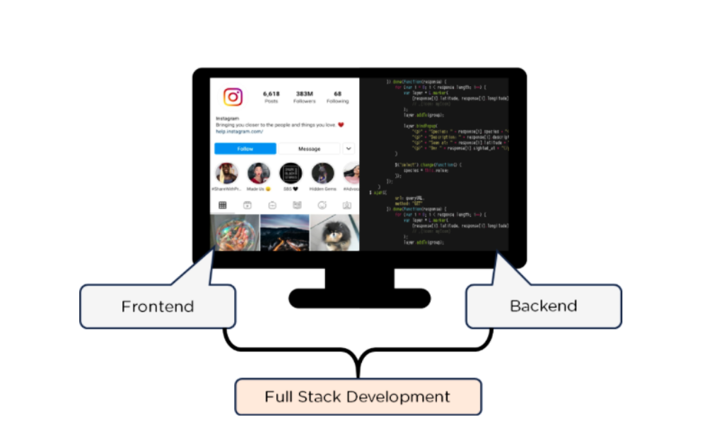
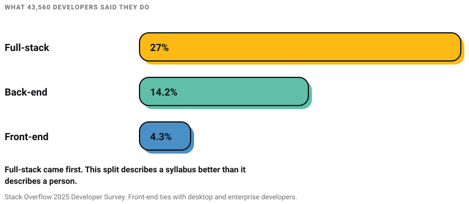
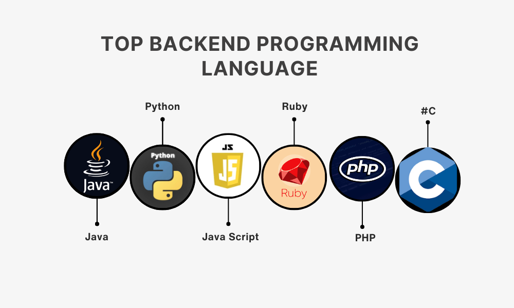
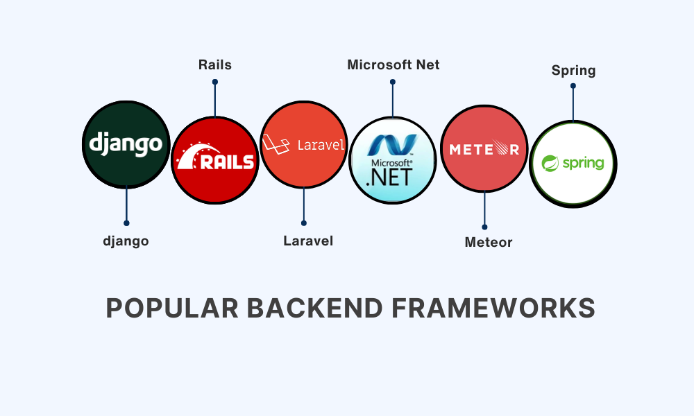
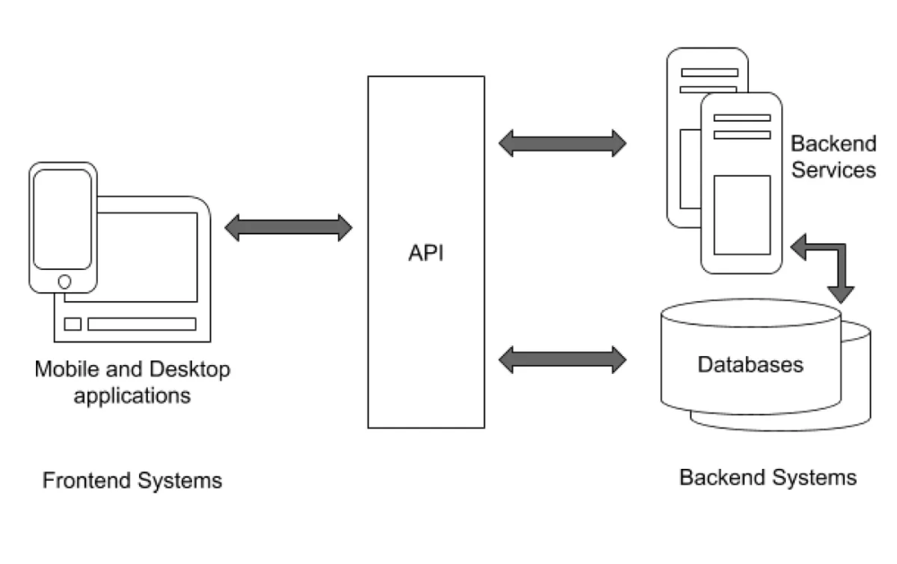
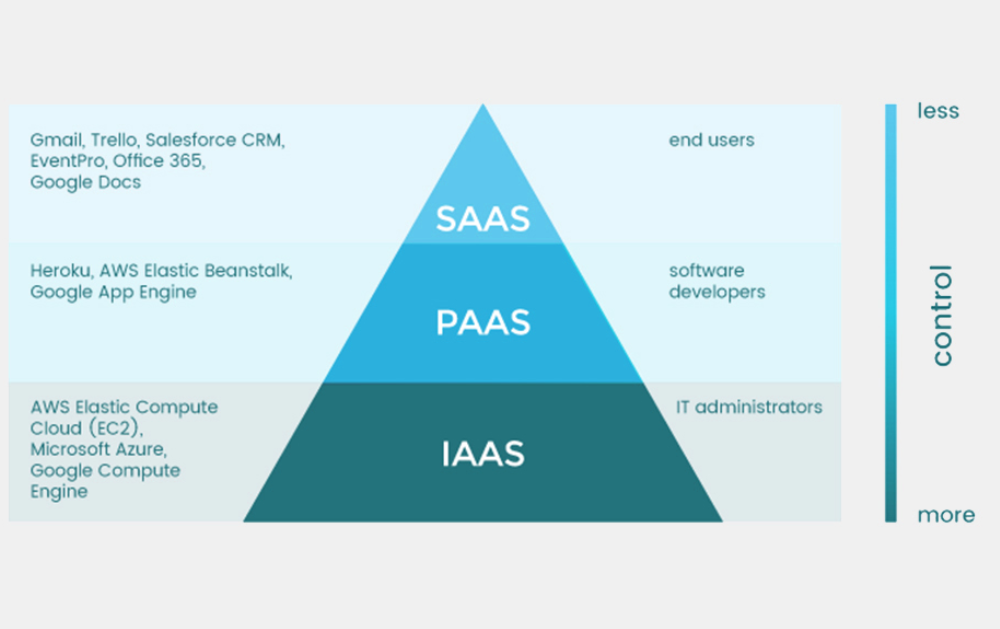
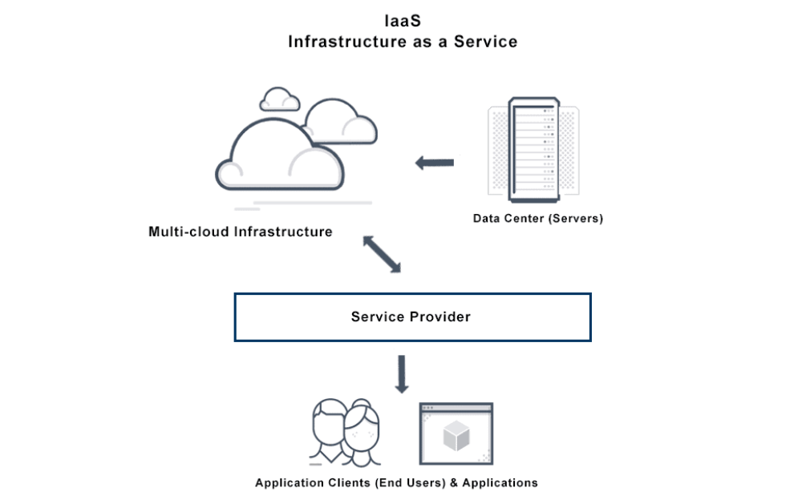
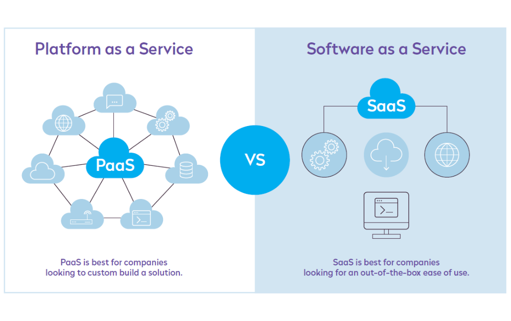
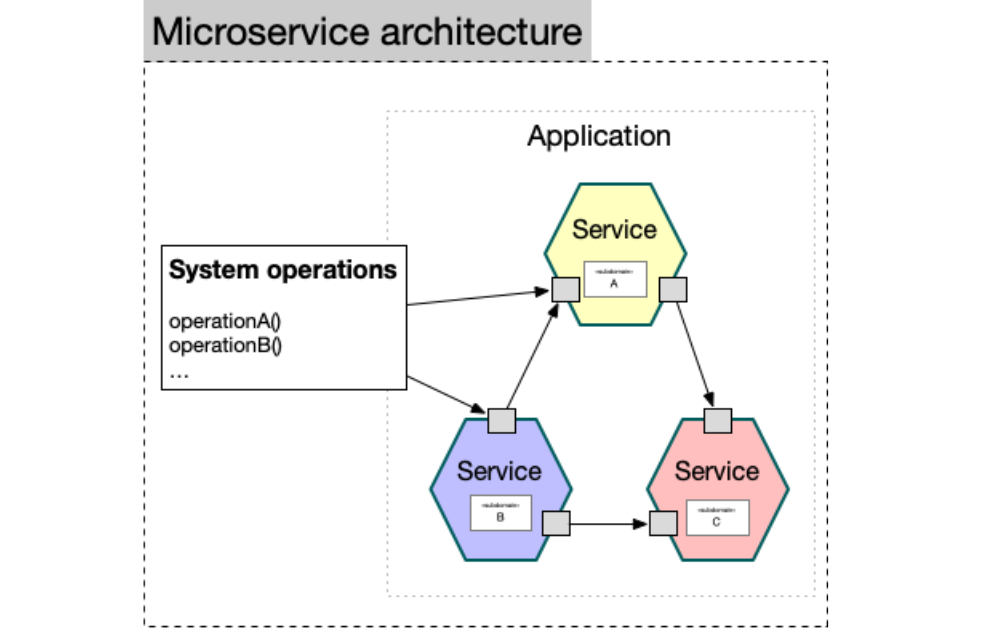
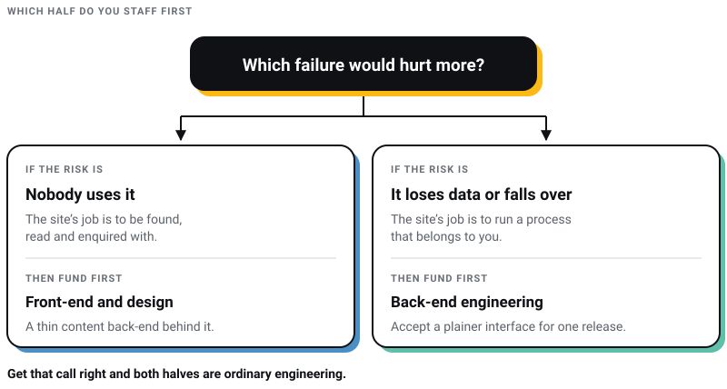

WEB DEVELOPMENT
WEB DEVELOPMENT
AI Website Builders vs Custom Development: Where the Shiny Tools Actually Break
AI website builders are fast, but are they right for your business? Discover where they excel, where they fail, and when custom development is the…

The most expensive misunderstanding I meet in a first meeting is a client who thinks front-end and back-end are two separate purchases.
I run Pixel Street, a web design studio in Salt Lake, Kolkata. We design and build for brands like Coca-Cola, ITC and Marico. The split is real, and it decides who we put on your project. It is also a weaker description of the work every year that passes: a front-end library now ships a feature called a Server Component.
Every version number and figure below was read off a linked source page on 30 July 2026. That matters more on this subject than on most, because a stack recommendation goes out of date quietly: the tool keeps working long after its authors have stopped maintaining it.
Front-end is everything that runs inside the visitor's browser: markup, styling, and the JavaScript that reacts when somebody taps a button. Back-end is everything that runs where the visitor cannot reach: the database, the business rules, authentication, payments, integrations.
If your site's job is to be found, read and enquired with, you are buying mostly front-end work with a thin content back-end behind it. If its job is to run a process that belongs to you, such as a booking engine or a dealer portal, most of the budget is back-end and the interface is the cheaper half. Which of those describes your project settles more about the invoice than any framework argument that follows.

Source: simplilearn.com
| Question | Front end | Back end |
|---|---|---|
| Where does the code run | In the visitor's browser, on their hardware and connection | On a server you control, or a platform you rent |
| What does it own | Markup, styling, interaction, accessibility, page weight | Data, business rules, authentication, payments, integrations |
| Usual languages | HTML, CSS, JavaScript, TypeScript | JavaScript on Node, Python, PHP, Java, C#, Ruby, Go |
| Current versions, 30 July 2026 | React 19.2, Angular 22, Vue 3.5, Next.js 16 | Express 5, Django 6.0, Laravel 13, Rails 8.1, Spring Boot 4.1, ASP.NET Core on .NET 10 |
| Who enforces the rules | Client-side validation is a courtesy; anyone with dev tools can switch it off | Server-side validation is the real boundary, and must repeat every check |
| How failure shows up | Slow, janky, unreadable on a phone, unusable with a keyboard | Wrong data, downtime, leaked records, a payment taken twice |
| What gets measured | Core Web Vitals: LCP, INP, CLS | Error rate, response time, query time, uptime |
| Who can check the work | Anyone with the page open | Only someone with server access and the logs |
One row is worth spelling out, because I have watched the confusion cause real damage. Comparison tables like this one routinely file "user input validation and input sanitization" under front-end. Client-side validation exists so people do not waste a round trip on a typo. It is not security. Every check has to be repeated on the server, because the browser is a machine your attacker controls.
Course sellers describe front-end and back-end as two career paths you choose between. The survey data does not support that. Stack Overflow's 2025 Developer Survey asked 43,560 people what they do. Full-stack came first at 27%, back-end second at 14.2%, and front-end at 4.3% — tied with desktop and enterprise developers, and behind "architect". The survey drew over 49,000 responses from 177 countries.

That does not mean front-end work has shrunk. It means most people doing it also do something else, and the title that describes them is full-stack. React Server Components became stable in React 19, defined by React's own team as rendering "in an environment separate from your client application or SSR server" (React 19 release notes, 5 December 2024). That is a front-end library shipping a server, and serverless platforms push from the other direction.
So hire for the split when a project needs specialists, and stop pretending it describes a person when it does not. On most content sites we ship, one developer holds both ends, and the useful distinction is between design work and engineering work, which is a different comparison entirely.
HTML gives a page structure, CSS decides how it looks and reflows on a 5-inch screen, JavaScript reacts to what the visitor does. Nothing has replaced any of the three. In Stack Overflow's 2025 technology section, across 31,771 responses, 66% of developers had worked with JavaScript and 61.9% with HTML and CSS — the two highest figures on the list (Stack Overflow, 2025).
The real shift in this layer is TypeScript, now at 43.6%. JetBrains, surveying 24,534 developers across 194 countries between April and June 2025, singles it out as the language with the sharpest five-year rise in real-world use (The State of Developer Ecosystem 2025). Filing TypeScript under "transpilers", as plenty of stack write-ups still do, undersells it badly. It is how a large codebase stays maintainable by people who did not write it.
Working the browser's Document Object Model by hand is tedious and error-prone, which is what frameworks are for. Where they stand on 30 July 2026:
Also worth knowing, because it runs more Indian brochure sites than any framework above: jQuery was still at 23.4%. Unfashionable, not dead.
Webpack is still maintained and shipping, at 5.109.2, but it is no longer the default for a new project. Vite took that position: 25.4% against Webpack's 18.4% in the 2025 survey, now on 8.2.0. Next.js 16 ships Turbopack instead of either.
The clearer signal is Create React App. On 14 February 2025 the React team deprecated it for new applications, noted it had no active maintainers, and pointed people at a framework such as Next.js, or a build tool such as Vite. A proposal that still starts a React project with Create React App was written from memory.
That is my strongest argument for asking any agency to date its stack. Not because old tools stop working, but because a team that missed a deprecation notice from the framework's own authors will miss the next one. I have written separately on choosing a web development framework; the short version is that team familiarity beats benchmark scores.
Sass still has a job in large existing codebases, but CSS absorbed much of what preprocessors were invented for: custom properties, nesting, container queries. Sass is also pruning its own past. Its @import rule and global built-in functions are deprecated as of Dart Sass 1.80.0, with removal not expected before Dart Sass 3.0.0, arriving no sooner than two years after 1.80.0. If you still use @import you have a deadline, not an emergency.
Bootstrap is on 5.3.8. Reasonable when nobody on the project is a designer; a tax when there is one.
Front-end work is judged on how a page feels, and Google made that measurable rather than a matter of taste. The Core Web Vitals thresholds published on web.dev are:
Two corrections, because both circulate constantly. INP became a stable Core Web Vital in 2024, replacing First Input Delay, so an audit still showing you an FID score is running on old assumptions. And I keep seeing 2.0 seconds quoted as a tightened LCP target; Google's documentation still says 2.5. What moves these numbers is unglamorous: image weight, how much JavaScript you ship, whether fonts block rendering, and where the server sits. None of it is a framework decision.
The client asks and the server answers, checking who is asking, whether they are allowed, and what the rules and the database say. Everything that has to be true regardless of what the visitor's browser does lives here.

Current figures are in the text below.
From the 2025 survey, across 31,771 responses on language use: SQL 58.6%, Python 57.9%, Java 29.4%, C# 27.8%, PHP 18.9%. Node.js, which is how JavaScript runs on a server, was the most-used entry in the frameworks section at 48.7%.
Node moves fast. Per nodejs.org, v26 is the Current release, first published on 5 May 2026, while v24 "Krypton" and v22 "Jod" are the long-term support lines. Node's own guidance is blunt: production applications should only use Active LTS or Maintenance LTS releases. If a developer proposes shipping your site on a Current release, ask why. And SQL topping that list is the part people skip: every back-end conversation becomes a database conversation.

Current versions and usage follow.
If your project is a WordPress site rather than an application, that is a different comparison and I have set it out in WordPress versus a PHP framework.
Relational databases store data in tables with defined relationships, and are the right default for anything involving money, orders or accounts. MySQL and PostgreSQL are the two you will meet. NoSQL stores such as MongoDB hold documents rather than rows and suit irregular data. The failure I see is choosing MongoDB for data that turned out to be relational, then reimplementing joins in application code.
A slow front-end costs you visitors. A weak back-end costs you data. Authentication, authorization, server-side validation, dependency updates and restorable backups sit on this side, and none show up in a design review. If a build has never been put through vulnerability assessment and penetration testing, nobody knows whether it is secure. They know it has not been caught.
An API is the contract that lets the interface and the server change independently. It runs over HTTP, and it is where most project arguments happen, because the shape of data that suits the database is rarely the shape the interface wants.

Source: infoq.com
My rule: start with REST, and move to GraphQL when you can name the over-fetching problem it solves for you. "It is more modern" is not that.
Working these in the wrong order is how a project spends three weeks on infrastructure to fix a missing index.

Source: plesk.com

Source-avinetworks.com
AWS, Google Cloud and Azure rent you virtual machines, storage and networking. Full control, and full responsibility for patching, configuration and the bill. There is also the plain latency question of which region the server sits in, which is why we keep a list of hosting services in India.

Source: www.codit.eu
PaaS takes server management away and leaves you the code; serverless goes further and charges per invocation. This is what has done most to blur the two halves, because a small team can deploy server code with nobody on it holding the title of back-end developer. SaaS is the decision not to build something at all, and every SaaS dependency is rented ground: speed now, against a subscription and an export problem later.

Source: microservices.io
Splitting an application into independently deployable services lets separate teams ship without coordinating every release, which is a benefit about org charts as much as about code. The cost is that every call you used to make in memory becomes a network call that can fail. For most projects businesses commission, a well-organised single application is the right answer, and microservices buy a large company's problems early.
Salary figures in this genre get recycled endlessly with no source attached, so here is one with a stated sample and a stated question. Stack Overflow's 2025 survey asked 23,928 respondents for their "current total annual compensation (salary, bonuses, and perks, before taxes and deductions)". Global medians in US dollars (Stack Overflow, 2025): back-end developer $79,742, full-stack $72,509, front-end $62,015. India was broken out separately, from 1,093 Indian respondents: back-end $22,086, full-stack $13,949, front-end $10,462.
Caveats I would want if I were reading this. It is a self-selected sample of Stack Overflow users, not a payroll census, the India figures rest on 1,093 people, and a median hides seniority. Direction of travel, not a rate card.
The gap does not mean front-end work is easier. It reflects that back-end skills sit closer to money moving and data being lost, and that much front-end work in India is priced as production rather than engineering. Whether that is fair is a separate argument from whether it is true.
Learning: start with the front end. HTML, CSS and JavaScript in that order, then one framework, building things people can open in a browser. Visible results early matter more for finishing than anyone admits, and most working developers end up doing both halves anyway. Add a back-end language once you need to store something.
Hiring: hire for the half where the risk sits. If the risk is that nobody uses it, hire front-end and design. If the risk is that it loses data, takes a payment twice or falls over during a campaign, hire back-end first and accept a plainer interface for one release. Forcing that decision early is most of what our web design process is for, and it is the biggest input into what a website actually costs in Kolkata.

Is front-end or back-end development harder?
Neither, and the question usually hides a different one about pay. Front-end is harder to get right, because you control neither the device, the browser version, the connection nor whether the visitor is using a keyboard. Back-end is harder to get wrong safely, because those failures are permanent. Stack Overflow's 2025 medians put back-end above front-end, but that reflects proximity to money and risk, not difficulty.
Do I need a full-stack developer or two specialists?
One person for a brochure or content site. Specialists once the interface or the data model needs dedicated attention. Full-stack was the most common role at 27% in Stack Overflow's 2025 survey, so the one-person answer is not a compromise.
What are the current Core Web Vitals thresholds?
LCP within 2.5 seconds, INP of 200 milliseconds or less, CLS of 0.1 or less, per web.dev. INP replaced First Input Delay as a stable Core Web Vital in 2024. Reports still quoting FID, or claiming LCP has tightened to 2.0 seconds, are wrong.
Has serverless made back-end developers unnecessary?
It removed server provisioning, not back-end thinking. Somebody still decides the data model, the authorization rules, and what happens when a payment succeeds but the callback fails. It changes who deploys the code, not who is accountable for it being correct.
Front-end and back-end are a useful way to split a quote and a poor way to describe a person. Most developers doing this work are full-stack, most of the tooling spans both halves, and the interesting question was never which side matters more. It is which half of your project carries the risk, because that is the half to fund properly and staff first.
Get that call right and both halves are ordinary engineering. Get it wrong and no amount of Next.js 16 or Laravel 13 rescues the project, and the version numbers in this article will be stale before the rescue is finished. We build both halves in Kolkata, and we will tell you which one your project needs before you have paid us anything.
10 min read 31 cited sources WEB DEVELOPMENT
Author
Khurshid Alam is the founder of Pixel Street, an AI-native design & development studio. Design thinking on weekdays and spreadsheets on weekends.
He writes about growth, design, and AI, mostly because someone has to say the quiet parts out loud.
WEB DEVELOPMENT
AI website builders are fast, but are they right for your business? Discover where they excel, where they fail, and when custom development is the…
 Digital Marketing
Digital Marketing
Learn about AEO vs GEO vs SEO. Discover what changed with AI search, what still matters, and how to optimize for Google AI Overviews, ChatGPT, and…
 Digital Marketing
Digital Marketing
Want ChatGPT to recommend your brand? Learn how AI chooses businesses, where citations come from, and practical ways to increase your visibility.
 Web Design
Web Design
A client asked me this on a call last month: “Khurshid, everyone just asks ChatGPT now. Do we even need a website anymore?” He runs a business doing…